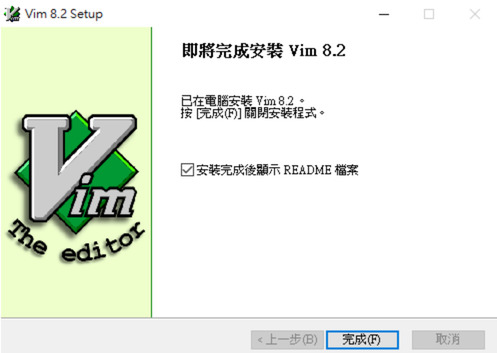

Visual studio with Vim

- How to start ?
- Choose your familiar IDE (Example : Visual studio)
- 常用的功能
- 其他功能
1. How to start ?
-
進入 Vim 官網
-
Download Vim 安裝檔
-
執行gvim82.exe，完成後如下圖

2. Choose your familiar IDE (Example : Visual studio)
3. 常用的功能
-
刪除一行 -
dd -
進入編輯模式 -
i -
進入VISUAL模式 -
v -
進入VISUAL BLOCK模式 -
ctrl(按鍵) +v -
寫入(儲存) -
:w -
離開 -
:q -
不儲存強制離開 -
:q! -
paste模式，直接貼上文字時格式不會跑掉 -
:set paste -
顯示行數 -
:set nu -
設定一個tab等於四個空白長度 -
:set tabstop=4 -
設定以後，使用tab鍵時會用空白取代(由tabstop決定) -
:set expandtab -
消除Highlight -
:noh -
範圍縮排(3到5行向右縮排，向左縮排用<) -
:3,5> -
將tab轉換成space -
:retab -
將檔案編碼轉成utf8 -
:set fileencoding=utf8 -
另存新檔 -
:w myfilename -
開啟檔案 -
:e filename -
自動對齊 -
== -
移動到該行最前端 -
^ -
移動到該行最末端 -
$ -
移動到下一個單字的第一個字元 -
w -
移動到前一個單字的第一個字元 -
b -
移動到下一個單字的最後一個字元 -
e -
移動到下一個單字的最後一個字元(無視符號) -
E -
全選(gg為游標移動到最上方，v為切換成選擇模式，G是游標移動到最下方) -
ggvG -
游標移動到特定行數(移動到第三行) -
3G -
複製反白的區塊(需要在VISUAL模式) -
y -
剪下反白的區塊(需要在VISUAL模式) -
d -
複製游標所在的那行(需要在VISUAL模式) -
shift(按鍵) +y -
貼上 -
p -
回復 -
u -
自動完成 (需要在編輯模式) -
ctrl(按鍵) +p -
搜尋字串 -
/<字串>：向下找、?<字串>：向上找